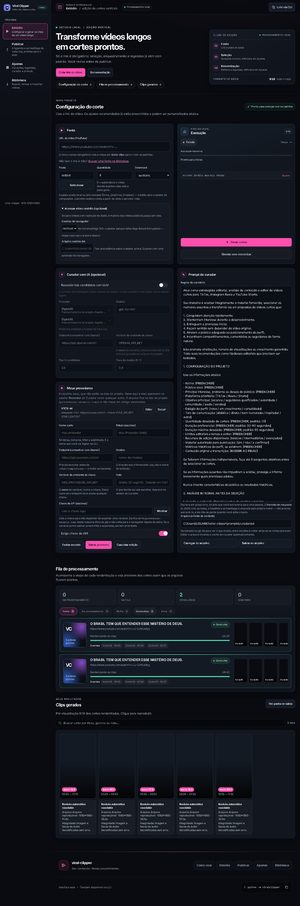
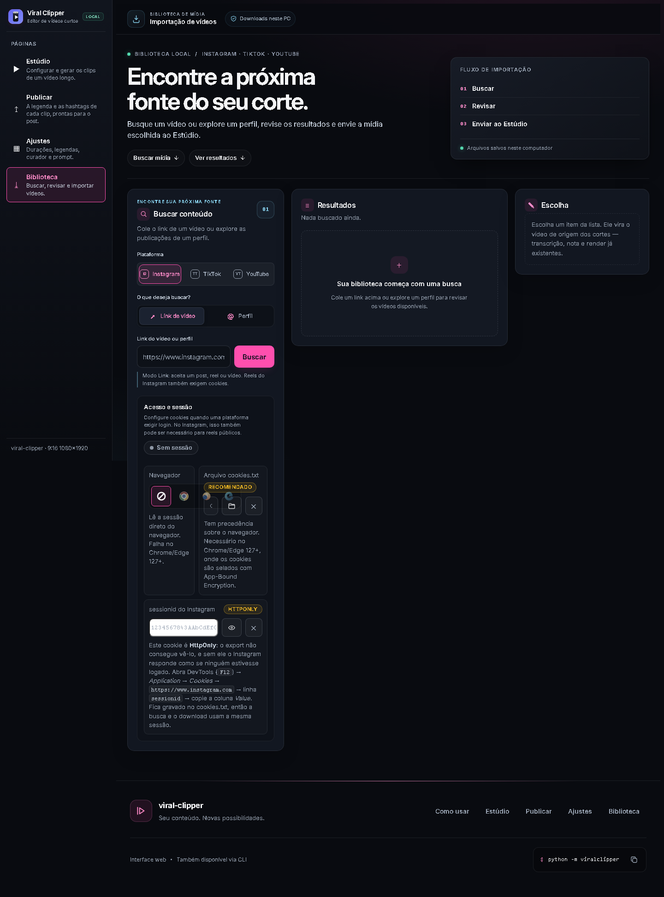
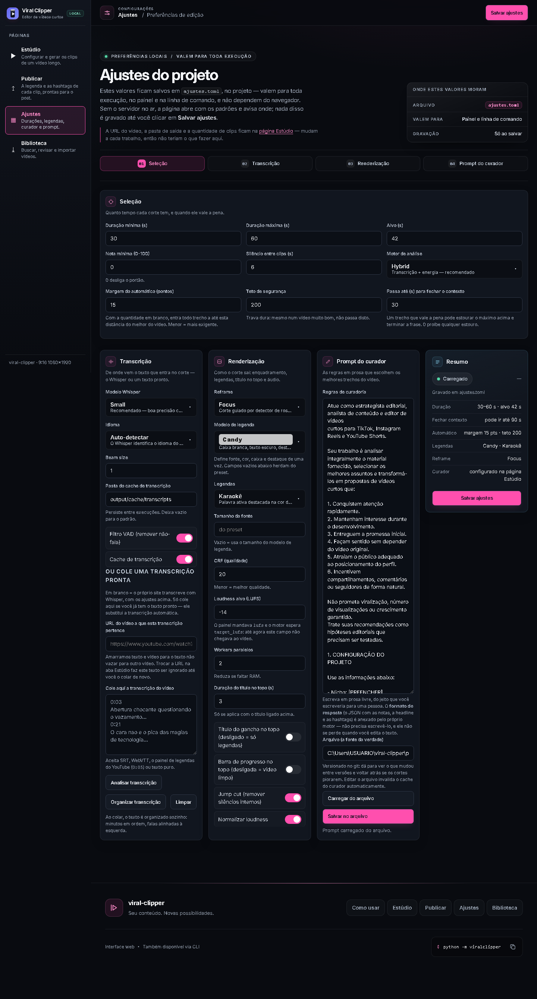

REVISÃO DE INTERFACE · 08/10/2026
O painel tem um sistema de design. O CSS não usa.
O shared.css declara uma escala tipográfica semântica de 10 degraus, três níveis de texto,
uma paleta de 11 valores e tokens de papel. É um sistema bem pensado — melhor do que a maioria dos
produtos internos tem. O problema é que as outras 3 folhas o ignoram: elas escrevem
.78rem, #8d97a8 e padding: 13px direto, e o resultado é que a
interface que chega à tela não é a que foi desenhada.
Esta não é uma proposta de “deixar mais bonito”. É uma proposta de fazer o CSS obedecer ao design que já existe — e, no caminho, trocar quatro coisas de lugar onde a estrutura atual cobra um preço de uso todos os dias.
font-size no CSS (43 computados na tela). A escala existe — 10 degraus — e a migração parou no meio.@media. Cada um é o ponto medido em que um componente quebra — não uma escala. Consolidá-los já foi tentado, medido e revertido.
Tudo acima foi medido no navegador, com o painel rodando em 127.0.0.1:7755,
em 1440 / 1024 / 390px. Não é leitura de arquivo — é o que o navegador de fato pintou.
As capturas estão em antes/.
Diagnóstico medido
Ordenado por impacto. P0 quebra uma regra que o próprio projeto já reconhece; P1 custa qualidade ou manutenção; P2 é oportunidade.
Aderência ao sistema
271 declarações de font-size, 59 valores declarados distintos (43 computados). Só ~147 usam a escala --text-* que já existe; as outras ~124 ainda escrevem rem cru. Pior: .72rem e 0.72rem convivem — o mesmo valor separado só pelo zero à esquerda.
#687386 em index.css:1761 dá 4,11:1 sobre o fundo — abaixo dos 4,5:1 exigidos para texto normal. Aparece em 4 telas. Irmão dele, #596274, é ainda mais escuro. Os dois são hex cru, fora do token.
O selo LOCAL do rail mede 8,32px — e no celular a Biblioteca chega a 7,68px. O menor degrau que a escala declara é --text-2xs = 11px: o texto está abaixo do piso da própria escala, porque uma cadeia de em multiplica o pai. Valor relativo não respeita o piso que o sistema promete.
O Estúdio pinta 34 cinzas diferentes. Muitos a 1–3 pontos de distância entre si (#8d97a8, #9ba5b5, #aab3c1, #c5ceda) — indistinguíveis a olho, mas todos decisões tomadas de novo.
35 valores distintos na união das 4 páginas (26 só no Estúdio). O uso real é “todo inteiro de 1 a 20”: 48× 1px, 30× 7px, 51× 9px, 19× 11px, 32× 13px. Cada um é uma exceção que ninguém vai lembrar depois. Aqui não existe nenhum token — nem --s-*, nem --space-*, nem --gap-*.
Arquitetura e estrutura
index.css (515 seletores) e scrap.css (338) declaram .card, .btn, .chip, .log-box, .toast, .rail, body… cada um com valores próprios. Sem @layer, quem vence é a ordem de arquivo — e o shared.css precisa ser linkado antes por causa disso, com um comentário de 30 linhas explicando por quê.
!important como solução de cascata.
13 no index.css, 3 no scrap.css. Cada um é uma derrota de arquitetura registrada em código.
@media.
1100, 1150, 1160 e 1180 existem em arquivos diferentes fazendo o mesmo tipo de trabalho — e é tentador unificá-los. Não unifique: shared.css:34-68 registra que consolidar 760/768 ou 380/420 já foi tentado, e a medição no navegador mostrou que as bandas guardam componentes diferentes na mesma faixa. O problema real é que ninguém consegue prever em que largura a tela muda — a cura é @container no componente, não um número redondo.
Três colunas de 340 / 469 / 291px com alturas de 1220 / 341 / 184px. Sobram cerca de mil pixels de vazio sob os dois painéis da direita, em toda visita.
Inputs de 40px, botões de 42px, o .toggle com 44×24px e o atalho Ajustar com 36×24px. No dedo, isso é erro de toque.
Os tamanhos de fonte que chegam à tela
37 tamanhos. Os cinco primeiros somam 57% de todo o texto — e três deles (12,0 / 12,2 / 12,8px) fazem o mesmo trabalho.
Vermelho = abaixo de 12px. Somam 45 nós de texto só no Estúdio.
As cores de texto que chegam à tela
34 valores. Os cinco mais usados são quatro cinzas diferentes mais o branco — e os quatro cinzas cobrem o mesmo papel.
Verde = token do sistema. Amarelo = hex escrito à mão. #687386 é o que reprova no contraste.
shared.css
(o comentário explica que a Biblioteca pintava indigo enquanto o Estúdio pintava magenta — isso foi
resolvido), a auto-hospedagem da fonte Inter, o prefers-reduced-motion presente em 21 blocos,
o skip-link, os alvos de toque de 44px no rodapé e no rail, a estrutura semântica
(dl na ficha, fieldset no curador, role=status nas regiões vivas)
e a tabela da transcrição — que é o componente mais bem construído do projeto.
O sistema proposto
Mesma identidade — o magenta fica, o fundo escuro fica. O que muda é que ele passa a ter regras que o CSS consegue obedecer.
Camadas, não !important
A causa raiz de 16 !important e de 25 seletores duplicados é que a cascata é decidida por ordem de arquivo. @layer declara a ordem uma vez:
@layer reset, tokens, base, layout, components, utilities;componentssempre vencebase, sem depender de quem foi linkado antes- uma folha de página deixa de precisar de
!importantpara sobrescrever - o comentário de 30 linhas no
shared.cssexplicando a ordem de<link>desaparece
Tokens tipados com @property
Uma custom property hoje é texto opaco: --radius: 8px não pode ser interpolado nem validado. Com tipo, ela vira um valor de verdade.
@property --radius { syntax: '<length>'; inherits: true; initial-value: 10px; }Ganho direto: dá para animar raio, espaçamento e elevação; e um valor fora do tipo é rejeitado em vez de quebrar o layout em silêncio.
A paleta: 11 valores, e nenhum hex depois deste bloco
A paleta crua do painel já é boa. O que falta é que os tons intermediários — hovers, tints, bordas — sejam derivados dela, e não digitados. color-mix() faz isso: o hover de qualquer botão, a borda de qualquer card e o fundo de qualquer selo saem do mesmo token.
A escala: 10 degraus de tipo, 8 de espaço
| Degrau | Valor | Papel |
|---|---|---|
--t-1 | 12px | metadado, selo, contador |
--t-2 | 13px | dica de campo, nota |
--t-3 | 14px | corpo, rótulo, input |
--t-4 | 16px | leitura, item de navegação |
--t-5 | 20px | título de card |
--t-6 | 24px | título de seção |
--t-7 | 28→36px | título de página (fluido) |
--t-8 | 36→48px | número-herói |
Espaço: 4 · 8 · 12 · 16 · 24 · 32 · 48 · 64. Tudo que não cai num degrau é sinal de que o componente quer dizer algo que o layout não tem onde pôr.
Movimento: 3 durações com significado
| Token | Duração | Quando |
|---|---|---|
--m-1 | 120ms | resposta a ponteiro: press, hover |
--m-2 | 200ms | mudança de estado: abre, seleciona |
--m-3 | 320ms | entrada de conteúdo: painel, lista |
Hoje há 42 declarações com duração em transition/animation, com valores soltos (120, 150, 160, 180, 260, 400ms e 0.9s a 3.0s). Três tokens, e uma regra global de prefers-reduced-motion zera os três de uma vez. A que existe hoje é ad hoc, elemento por elemento — e já falhou por especificidade (shared.css:710-717: o transitionDuration media 0.18s mesmo com o sistema pedindo movimento reduzido).
aria-current. Os gráficos deste documento usam
rótulo numérico além da barra. O painel já acerta nisso em vários pontos — a proposta é não perder.
Estúdio: de vitrine para bancada
A página que a pessoa abre todo dia começa com 354px de hero de landing, tipografia de 42px e um cartão de “fluxo de edição” — antes de qualquer coisa útil.

Hero de 354px · 7 cards · 3750px no desktop, 6267px no celular · 445 elementos visíveis · o card de Execução esticado a 676px para empatar com o Fonte, com o log vazio ocupando a maior parte.
Fonte
Curador com IA desligado
Os campos ficam visivelmente inertes enquanto o interruptor está desligado — hoje eles já desabilitam, e isso está certo. O que muda é a leitura: a explicação vem antes, não dentro de um parágrafo no meio do bloco.
Fila de processamento
| Job | Estado | Progresso | Cortes | Tempo | Ações |
|---|---|---|---|---|---|
| dQw4w9WgXcQ | Renderizando | 2 / 5 | 4m12s | ||
| aB3xY9kLmNo | Concluído | 7 | 11m40s | ||
| pQ7rS2tUvWx | Erro | — | 0m48s | ||
| zX1cV2bN3m | Na fila | — | — |
Sem hero. O H1 vira título de página de 28px, e o campo que é o começo do trabalho sobe para o topo. Barra de comando → faixa de estado → dois painéis → tabela da fila. Tudo acima da dobra.
O que sai
O hero de uma ferramenta de uso diário não convence ninguém: quem abre já comprou. Ele só empurra o primeiro campo para baixo da dobra.
O que fica
As decisões de conteúdo do painel são boas e foram tomadas com cuidado — inclusive as que estão documentadas em comentário. A proposta mexe em onde, não em o quê.
O ganho
- primeiro campo: de y≈593 para y≈120
- altura do desktop: 3750 → ~1900px
- altura no celular: 6267 → ~3100px
- os 4 cards de ajuste entram numa linha só de rolagem
Biblioteca: o vazio de mil pixels
Três colunas de 340 / 469 / 291px com 1220 / 341 / 184px de altura. O resultado é que dois terços da tela ficam vazios — e o painel de sessão, que é configuração, ocupa o lugar mais caro da página.

A coluna de busca acumula plataforma + modo + URL + viral + limite + cookies + arquivo + sessionid em 340px. As notas de ajuda, a 10–11px, quebram em 6 linhas cada. Os outros dois painéis terminam em y=593 e a página vai até y=1947.
Resultados — 18 itens
| Seleção | Item | Views | Tipo | Ações |
|---|---|---|---|---|
| Cx1y2z3 · “o erro que quase me custou…” | 1,2 M | reel | ||
| Cy4w5v6 · “ninguém te conta isso sobre…” | 840 mil | reel | ||
| Cz7u8t9 · carrossel sobre produtividade | 312 mil | post |
Os resultados viram o painel principal, em tabela — porque é comparar itens que a pessoa veio fazer. A sessão sai do meio do caminho e vira um disclosure na faixa de contexto. A coluna “Escolha” encosta no topo e acompanha a rolagem.
Por que tabela, e não cards
- Comparar é o trabalho. Views, tipo e duração lado a lado, em colunas alinhadas — em card, cada número fica num lugar diferente.
- Números alinham na vírgula com
font-variant-numeric: tabular-nums. Sem isso, “840 mil” e “1,2 M” dançam. - Seleção em lote vira uma coluna, com o “selecionar todos” no cabeçalho — hoje é um botão acima da lista.
- Cabe muito mais por tela. 3 linhas de 44px mostram o mesmo que 3 cards de 160px.
- Ordenável com
aria-sort— e o navegador anuncia a ordenação, o que card nenhum faz.
A sessão sai do caminho
Cookies de navegador, arquivo cookies.txt e sessionid do Instagram ocupam hoje mais da metade da coluna de busca — e são configuração de uma vez só. Três notas de 10–11px explicando App-Bound Encryption e o caminho do DevTools ficam no meio do fluxo de quem só quer colar um link.
Na proposta, viram um disclosure fechado por padrão na faixa de contexto, com o estado visível (“Sessão: cookies.txt”). Quem precisa abre; quem não precisa nunca vê.
Ajustes: o mesmo componente, em qualquer largura
Esta é a mudança mais estrutural da proposta, e a que rende mais a longo prazo.

Quatro colunas (1148 + 3×275px). O .field-row.triple colapsa de 3 para 1 coluna dentro dos cards de 275px — e colapsa por um @media de página. Funciona, mas amarra o componente à largura da janela: o mesmo card num modal ou num painel lateral não teria como se adaptar.
Seleção
Transcrição
Renderização
Cada painel é o mesmo componente. Nenhum sabe da largura da janela — só da própria caixa.
O card deixa de ter largura fixa. Entra numa grade fluida, e a grade interna responde ao próprio container.
A demonstração: o mesmo card, quatro larguras
Arraste o controle. O markup não muda em nenhum ponto — só a largura da caixa. É @container, e não @media: a pergunta que o CSS faz é “quão larga é a minha caixa?”, não “quão larga é a tela?”.
| Largura | Colunas |
|---|---|
| ≥ 640px | 3 |
| 420–639px | 2 |
| < 420px | 1 |
As mesmas três regras, com ou sem @media de página em volta — e valendo também dentro de um modal, de uma gaveta ou de uma grade de 6 colunas.
O que isso apaga
- as regras de
.field-row.tripleque existem por página - os poucos breakpoints que ficarem órfãos — os que existiam só para isso. Não os medidos do shell
- a necessidade de saber de cor em que largura cada tela quebra
- a regra
[data-page="ajustes"] …que existe para desfazer o que o card do Estúdio faz
E o <select>?
O painel troca 6 <select> nativos por um <button> + div[role=listbox] — o que dá o dropdown rico com título e descrição. O custo: o <select> fica aria-hidden + tabindex="-1", e o widget perde busca por digitação, Home/End e o seletor nativo do celular.
Com 36 opções no Modelo de legenda, digitar “po” e pular para “Poppins” é a diferença entre 2 segundos e 12 rolagens. Caminho moderno: appearance: base-select + ::picker(select) estiliza o select nativo, mantendo teclado, busca por digitação e o picker do sistema — com o dropdown atual como fallback.
Tabelas: o componente mais bem feito é o menos usado
O painel tem uma <table>: a prévia da transcrição. E ela é, de longe, o componente mais bem construído do projeto.
O que a tabela da transcrição acerta
| Minuto | Dur. | Fala |
|---|---|---|
| 0:03 | 4,2s | Abertura chocante questionando o vazamento… |
| 0:21 | 7,8s | O cara não é o pica das galáxias de tecnologia… |
| 0:44 | 3,1s | E aí ninguém explica por que isso importa. |
theadde verdade — não umdivfingindo de cabeçalho- coluna de duração com
white-space: nowrape alinhada à direita - rolagem com altura máxima, sem empurrar a página
- hover de linha, que dá o rastro de leitura em lista longa
- largura de 1% na coluna estreita, deixando a fala levar o resto
O que ela deveria ter a mais
font-variant-numeric: tabular-numsnos minutos e durações — hoje “1:07” e “11:07” têm larguras diferentes e a coluna dança a cada nova transcriçãoposition: stickynothead— numa lista de 200 falas, o cabeçalho sai de vista e as colunas perdem o nome- uma coluna de ação (reproduzir a partir deste minuto)
<caption>com a contagem — “218 falas · 12m40s transcritos”- resumo em texto para leitor de tela, já que a tabela é a informação
Os dois lugares que pedem tabela
1. A fila de processamento
Hoje: cards, com o estado morando na classe (running/done/fail) e um resumo de 4 números + 5 filtros acima. Para responder “qual job está travado?” é preciso ler 4 cards inteiros.
Proposta: a tabela da seção do Estúdio — job, estado, progresso, cortes, tempo, ações. O resumo de 4 números continua (é o “de relance”), mas vira uma faixa, não uma grade de cards.
2. Os resultados da Biblioteca
Hoje: 20 cards de retrato, cada um com capa, shortcode, views e ações em posições ligeiramente diferentes.
Proposta: a tabela com coluna de seleção, título, views, tipo e ação. A capa continua — mas como miniatura de 32px na primeira coluna, não como o corpo do card.
Plano de execução
Em fases, cada uma com resultado visível e verificável. A ordem não é por tamanho — é por dependência: as fases 1 e 2 são pré-requisito de todas as outras.
Camadas e tokens
Nenhuma mudança visual. Só a fundação que faz o resto ser possível.
- declarar
@layernas 4 folhas, na mesma ordem - tipar os tokens com
@property - esvaziar os 16
!important— cada um vira uma regra na camada certa - eliminar os 25 seletores duplicados entre
index.cssescrap.css
Critério de aceite: as 4 telas renderizam idênticas (comparação de pixel por página), e o test_web_server continua verde.
Adesão à escala
59 font-size declarados → 8 degraus. 35 espaçamentos → 8. 58 cores de texto → 3 papéis.
- substituir cada
font-sizecru por um token (o mapa é mecânico: o valor mais próximo do degrau) - mesma coisa para
padding/gap/margin - substituir os 83 hex por tokens; tom intermediário vira
color-mix() - corrigir
#687386e#596274— é o que reprova no contraste - subir todo texto a ≥12px (o selo “LOCAL” e os monogramas são os casos extremos)
Critério de aceite: auditoria nova acusa 0 reprovação de contraste, 0 texto <12px, e a contagem de valores distintos cai para ≤12.
Container queries e toque
O componente deixa de depender da largura da janela.
container-type: inline-sizenos cards com grade interna- trocar as regras de página por
@container - remover só os breakpoints que ficarem órfãos (~3-4). Os medidos do shell ficam — 17→5 é uma promessa que a medição não sustenta
- levar os 46 alvos de toque a 44px — inputs a 44px,
.togglea 44×44
Critério de aceite: sonda em 10 larguras sem overflow, sem rótulo quebrado, e nenhum alvo abaixo de 24px (piso WCAG 2.5.8).
Estrutura das páginas
A mudança que a pessoa sente. Depende de 1–3 estarem prontas.
- Estúdio: hero sai, barra de comando entra, fila vira tabela
- Biblioteca: grade balanceada, sessão vira disclosure, resultados em tabela
- Ajustes: grade fluida de painéis, sem regra por página
- atalhos internos viram âncoras na própria navegação
Critério de aceite: Estúdio abaixo de 2000px no desktop e 3200px no celular; nenhuma seção com mais de 300px de vazio.
Riscos, e como cada um é contido
| Risco | Por que acontece | Contenção |
|---|---|---|
| Quebrar os testes de markup | A suíte lê o HTML por regex e por inspect.getsource: ids, níveis de heading, aria-describedby e literais de rota |
Fases 1–3 não tocam markup. A fase 4 roda a suíte inteira e compara a lista classname::name, nunca a contagem |
| Árvore compartilhada | web/*.css e web/*.js estão sendo editados por outra sessão agora |
Fase 1–3 em arquivos novos (tokens.css), com o @layer entrando por último — um commit por vez, arquivo por arquivo |
| Perda de decisões documentadas | Os comentários do CSS registram medições e o porquê de cada escolha — há regras que parecem erro e são intenção | Cada comentário que explica uma medida é movido junto com a regra, nunca apagado. Regra cuja justificativa não se entende fica como está |
| Mudança visual indesejada | A fase 2 mexe em toda a tipografia de uma vez | Captura das 4 telas em 3 larguras antes e depois; a comparação é a revisão |